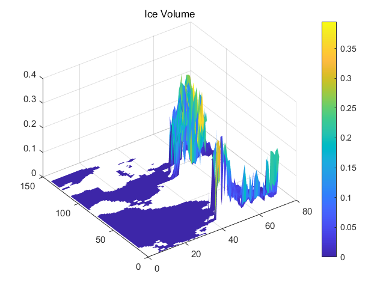

Network Common Data Form (NetCDF)
# 关于
Unidata 网络通用数据格式（netCDF）是用于科学数据访问的接口，并且是一个自由分发的提供了该接口的实现软件库。netCDF 库还定义了用于表示科学数据数据格式。 接口，库和格式共同支持科学数据的创建，访问和共享。
# 参考网站
- 官网
- GitHub
- Matlab
# 开始
因为还不太熟悉超算服务器，我先把其中一个月的数据传到了本地，然后用 Matlab 查看。
-
ncdisp在命令行窗口中显示 NetCDF 数据源内容FileName='T045_D.cice.h.0036-01.nc'; ncdisp(FileName)
后面有非常多的变量……
-
ncinfo以结构体形式返回有关 NetCDF 数据源的信息finfo = ncinfo(FileName); -
ncread读取 NetCDF 数据源中的变量数据
iceVolume=ncread(FileName,'vicen001_d'); %读取全部 start=[100,200,1];count=[Inf,Inf,1];stride=[5,5,1];%读取部分，分别是起始点、数量、间隔 iceVolumePart=ncread(FileName,'vicen001_d',start,count,stride); surf(double(iceVolumePart)); title('Ice Volume'); -
NetCDF 包
为了对读写过程进行更多控制，可使用包含低级函数的 NetCDF 库程序包。详细可查看 matlab 官方文档。